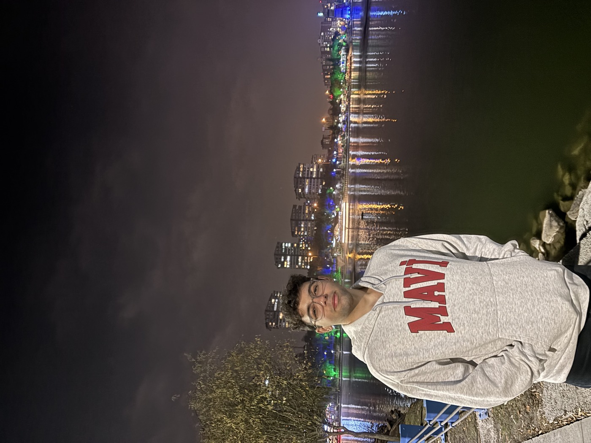
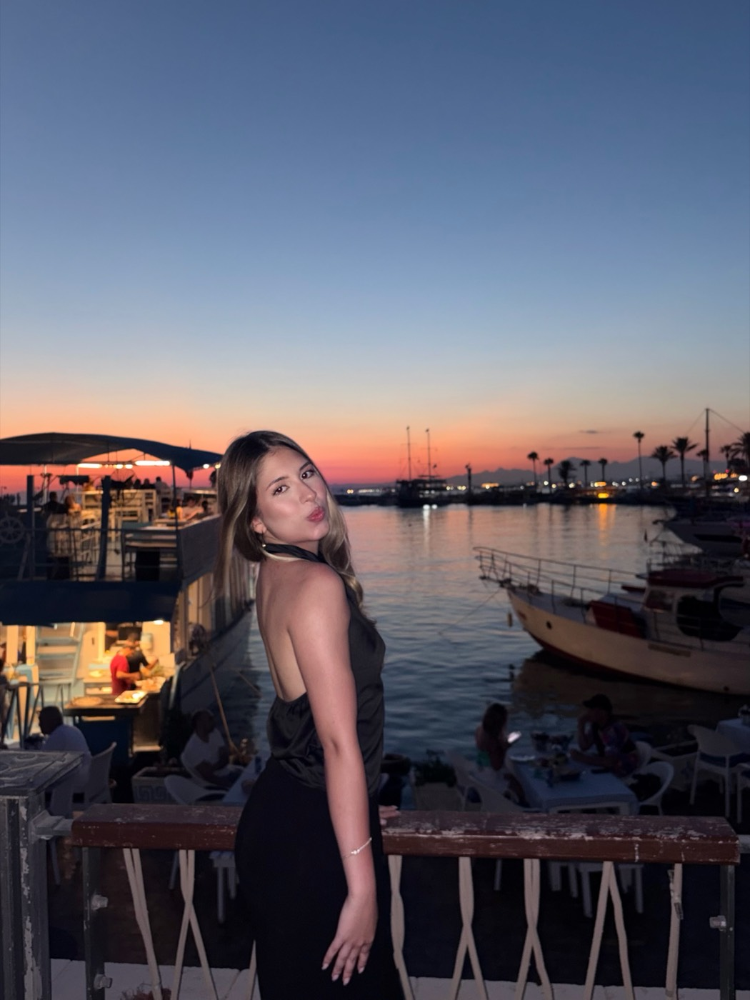
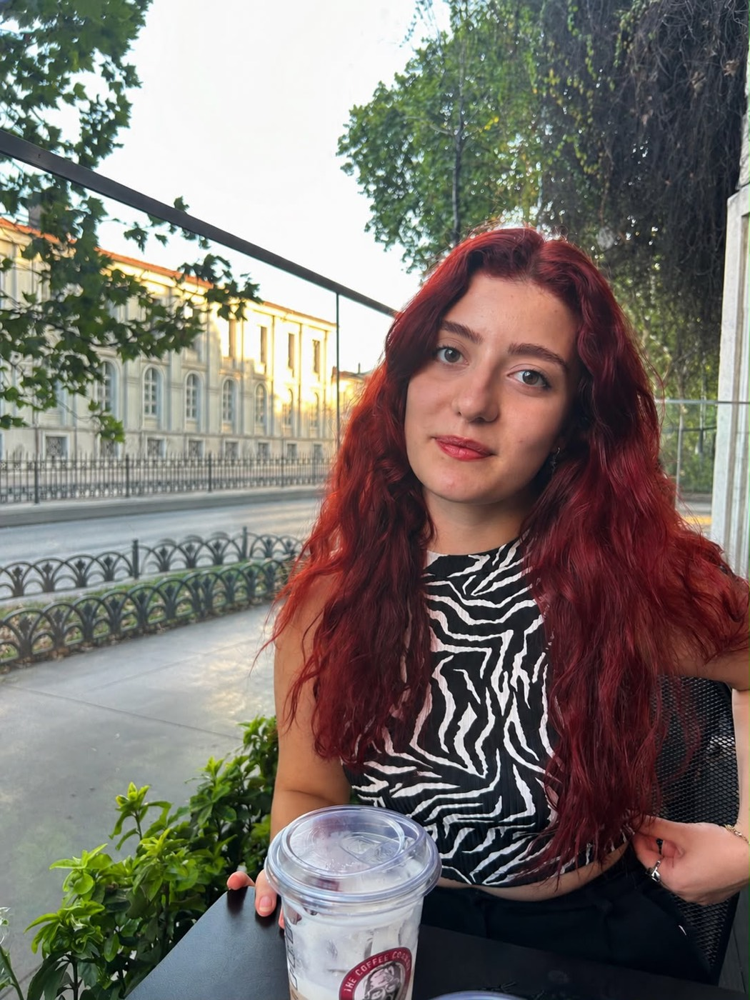

Türkiye sıralaması
542.
Tuğberk Keskin
Hacettepe Üniversitesi Tıp Fakültesi · Ankara
Çocuğunuz, sınav başarısını kanıtlamış bir tıp fakültesi öğrencisiyle çalışsın.

EğitmenimizOkudukları fakülteler ve Türkiye sıralamalarıyla.


Matematik dersleri normalde sıkıcı olur diye düşünülür ama burada dersler tam bir sohbet eşliğinde, gayet keyifli ve eğlenceli geçiyor. Zamanın nasıl geçtiğini anlamıyorum.